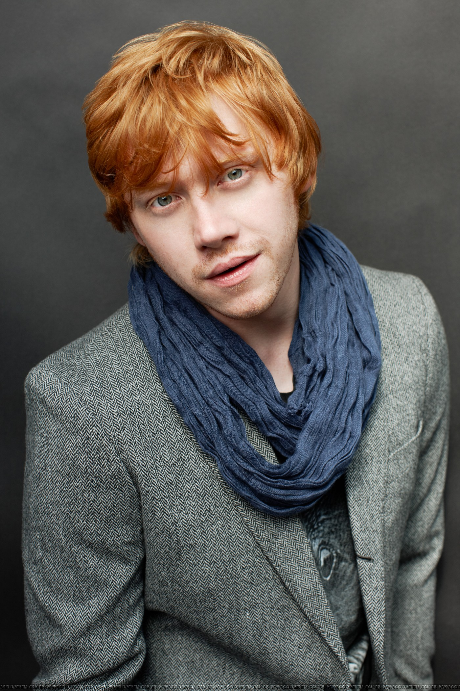

Rupert Grint
Información general
Rupert Alexander Lloyd Grint (Harlow, Essex, 24 de agosto de 1988) es un actor británico, conocido por interpretar a Ron Weasley en la serie de películas de Harry Potter. Obtuvo dicho papel a los once años, después de haber participado anteriormente solo en obras de teatro escolares y grupos de teatro locales. Protagonizó, junto a Daniel Radcliffe y Emma Watson, las ocho películas de la serie cinematográfica.
Realizó su primera aparición fuera de Harry Potter en el largometraje Thunderpants dirigido por Pete Hewitt y estrenado el 24 de mayo de 2002. Protagonizó la comedia dramática Driving Lessons, estrenada el 8 de septiembre de 2006, donde compartió reparto con Julie Walters, actriz que encarnó a Molly Weasley —madre del personaje de Grint— en la saga de películas de Harry Potter, y Cherrybomb (2009), una cinta de bajo presupuesto de lanzamiento limitado. Además coprotagonizó la comedia Wild Target, junto a Bill Nighy y Emily Blunt. Su primer proyecto luego del final de la saga Harry Potter ocurrió en 2012, con la cinta antibélica Into the White.
En 2013 protagonizó la obra de teatro Mojo, del dramaturgo Jez Butterworth, en el Harold Pinter Theatre de Londres. Al año siguiente debutó en Broadway, con la obra It's Only a Play, en el teatro Gerald Schoenfeld, junto a F. Murray Abraham y Megan Mullally, entre otros
Comienzos
Durante el tiempo en que formó parte de la saga Harry Potter, Grint actuó en otros proyectos, en su mayoría filmaciones de cine independiente. En 2002 se estrenó Thunderpants, una película británica donde interpretó a Alan A. Allen, un joven que padece anosmia y es el único amigo del protagonista —interpretado por Bruce Cook—. El largometraje no llamó la atención ni de la crítica ni del público por igual. Un crítico llegó a decir: «Esta película debe ser exhibida en las cárceles para que los presos tengan una buena razón para no volver jamás». En 2005 dio voz a Peter Pan en el documental televisivo de la BBC Happy Birthday, Peter Pan. También compartió el papel protagónico con Julie Walters —actriz que en Harry Potter interpretó a Molly Weasley, madre del personaje de Grint— en la película de 2006 Driving Lessons, donde encarnó a un joven reprimido que entabla una amistad con una actriz retirada. La cinta, a la que Grint llamó «la primera cosa madura que hice»
Después de Harry Potter
Finalizada la última entrega de la saga Harry Potter, Grint protagonizó la película Wild Target (2010), basada en el largometraje francés Cible Emouvante de 1993. Dirigida por Jonathan Lynn y con un presupuesto de ocho millones de dólares, Wild Target no terminó de convencer a la crítica, que le dio comentarios negativos remarcando el desperdiciado potencial cómico del elenco. Sin embargo, Grint recibió críticas positivas; Natasha Hodgson, del sitio web Best For Film, escribió que «es agradable ver a Rupert Grint lograr buenos resultados en un papel distinto al de Ron Weasley, y está claro que tiene una carrera por delante». En 2011 realizó un cameo en el popular show de comedia de la BBC Come fly with me, protagonizado por el dúo Matt Lucas y David Walliams, más conocidos como «Little Britain». Ese mismo año protagonizó el film antibélico, escrito y dirigido por Petter Næss, Into the White, filmado en Noruega. Este narra la forzada convivencia entre la tripulación de dos bombarderos abatidos en combate —uno alemán y otro inglés— en la soledad de un refugio del invierno lapón y de cómo dejaron diferencias hasta hacerse amigos. También en 2011 protagonizó el videoclip de la canción «Lego House», de Ed Sheeran. Fue lanzado en octubre de ese año, recibiendo una nominación como mejor vídeo masculino en los MTV Video Music Awards. Asimismo, en septiembre dio voz a Josh en la adaptación cinematográfica de Postman Pat titulada Postman Pat: The Movie – You Know You're The One, junto con David Tennant, Stephen Mangan y Jim Broadbent. La película no se estrenó sino hasta 2014.
Teatro
En 2013 debutó con la obra Mojo, de Jez Butterworth, desarrollada en Londres durante la década de 1950 y basada en hechos reales. Por su papel de Sweets, ganó el galardón a la revelación londinense del año en los Premios WhatsOnStage. Protagonizó esta obra junto a Brendan Coyle, Ben Whishaw y Daniel Mays. En junio de 2014 se anunció su debut en Broadway, en la obra It's Only a Play, una versión de la realización de Terrence McNally estrenada en 1986 en el Manhattan Theater Club.48 Grint personificó a Frank Finger. El 28 de agosto de ese año se realizó un prestreno en el Gerald Schoenfeld Theatre, el debut fue oficialmente el 9 de octubre, con una limitada participación de dieciocho semanas, hasta el 4 de enero del siguiente año. Antes de ser estrenada, la comedia ya había recaudado seis millones de euros. La obra fue escrita por McNally y dirigida por Jack O'Brien. Por este papel, Grint obtuvo una nominación como mejor nuevo actor de Broadway en los Premios NewNowNext. A pesar del aumento de las funciones hasta el 29 de marzo, Grint junto con Lane y Mullally abandonaron la obra siendo sustituidos por Maulik Pancholy, Martin Short y Katie Finneran, respectivamente.
Vida personal
Al igual que su personaje en la serie de películas de Harry Potter, sufre de aracnofobia, miedo a las arañas. El actor disfruta de una amistad muy cercana con Tom Felton, quien encarnó a Draco Malfoy en la saga Harry Potter. En agosto de 2011 participó, junto a Felton, en una sesión fotográfica en Los Ángeles para la colección de otoño/invierno de la marca de moda Band of Outsiders.
En 2012, de acuerdo a una fuente, Daniel Radcliffe supuestamente decía que rara vez hablaba con Grint a diferencia de lo que asumía la gente y que ellos no eran amigos. Además, supuestamente Radcliffe dijo: «[A Grint] lo veo cada seis meses o algo por el estilo, y lo único que nos decimos es un amistoso "Hola, ¿cómo van las cosas?", pero eso es todo». Más tarde el mismo Radcliffe lo desmintió, diciendo que era ridículo y que por supuesto que él y Grint eran amigos. Afirmó: "Nunca nos hemos enviado mensajes de texto en diez años de rodaje. Simplemente nunca lo hicimos porque somos perezosos para hacer eso (...) Sé que la próxima vez que vea a Rupert, nos sentaremos juntos y hablaremos, y será como en los viejos tiempos.
Carrera cinematográfica
| Año | Título original | Papel | Director |
|---|---|---|---|
| 2001 | Harry Potter and the Philosopher's Stone | Ron Weasley | Chris Columbus |
| 2002 | Thunderpants | Alan A. Allen | Peter Hewitt |
| Harry Potter and the Chamber of Secrets | Ron Weasley | Chris Columbus | |
| 2004 | Harry Potter and the Prisoner of Azkaban | Alfonso Cuarón | |
| 2006 | Driving Lessons | Ben Marshall | Jeremy Brook |
| 2005 | Harry Potter and the Goblet of Fire | Ron Weasley | Mike Newell |
| 2007 | Harry Potter and the Order of the Phoenix | David Yates | |
| 2009 | Cherrybomb | Malachy McKinney | Glenn Leyburn |
| Harry Potter and the Half-Blood Prince | Ron Weasley | David Yates | |
| 2010 | Harry Potter and the Deathly Hallows - Part 1 | ||
| Wild Target | Tony | Jonathan Lynn | |
| 2011 | Harry Potter and the Deathly Hallows - Part 2 | Ron Weasley | David Yates |
| 2012 | Into the White | Gunner Robert Smith | Peter Næss |
| 2013 | The Necessary Death of Charlie Countryman | Karl | Fredrik Bond |
| CBGB | Cheetah Chrome | Randall Miller | |
| Metegol | Amadeo (voz en la versión inglesa) | Juan José Campanella | |
| 2014 | Postman Pat: The Movie - You Know You're the One | Josh (voz) | Mike Disa |
| 2015 | Moonwalkers | Jonny | Antoine Bardou-Jacquet |
| Enemy of Man | Rosse | John Maybury |